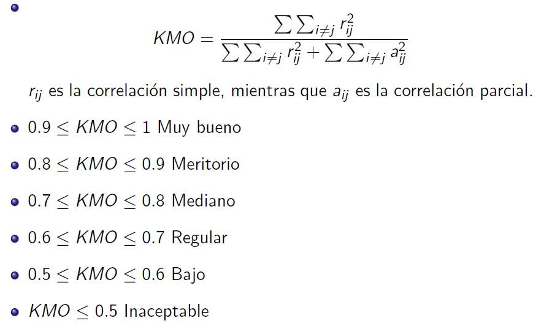
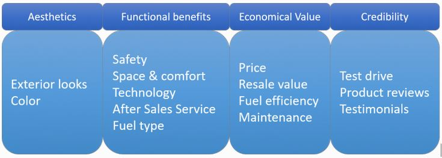

El análisis factorial es un método estadístico efectivo para la reducción dimensional, especialmente en situaciones en las que se necesita usar los datos para análisis y cálculos posteriores (por ejemplo, regresión). Sin embargo, se utiliza para describir la correlación general entre todas las variables, utilizando un número potencialmente menor de variables que se denominan factores. Estos factores son, sin embargo, variables aleatorias no observadas.
El enfoque de análisis factorial busca covariables similares con respecto a su correlación mutua. Todas las variables con correlación mutuamente alta se representan con un factor (o una combinación lineal de factores) en su lugar.
Datos del estudio realizado por Cook y Thompson (2001), para evaluar los servicios de una biblioteca.
El departamento de servicio al usuario de una biblioteca deseaba realizar encuestas mensuales breves a los usuarios para explorar su percepción acerca de la calidad del servicio que la biblioteca brindaba. Con este objetivo en mente, se preparó una encuesta que serviría como base de la encuesta final.
Se propusieron algunos aspectos, resumidos en las siguientes cuestiones evaluadas en la escala de Likert, a los que los usuarios debían asignar puntajes del 1 a 9, donde 1 significaría “totalmente en desacuerdo” y 9 “totalmente de acuerdo”. las cuestiones fueron:
Primero cargamos el conjunto de datos usando las siguientes sentencias:
base=read.csv("CalBi.csv")
head(base)
summary(base)Visualizando el conjunto de datos:
head(base)
summary(base)Como la idea es expresar la información con un menor número de variables, es recomendable tener variables correlacionadas.
Test de esfericidad de Bartlett
Evalúa si la matriz de correlaciones es significativamente diferente de la matriz identidad. Si se rechaza la hipotesis de que la matriz de correlaciones es igual a la matriz identidad, se acepta la adecuación del análisis.
El determinante de la matriz da una idea de la correlación generalizada entre todas las variables. Se basa el test en la distribución chi cuadrado donde valores altos llevan a rechazar H0, así, la prueba de esfericidad de Bartlett contrasta si la matriz de correlaciones es una matriz identidad, que indicaría que el modelo factorial es inadecuado.
\(H_0: |R|=1\)
\(H_1: |R|\neq 1\)
#library(psych)
# matriz de correlaciones
Rcor=cor(base, use ="pairwise.complete.obs")
Rcor
det(Rcor)
print(cortest.bartlett(Rcor,n=nrow(base)))Índice KMO
knitr::include_graphics("images/kmo.JPG")
KMO(base)sedimentacion=princomp(base, scores=T, cor=T)
plot(sedimentacion, type="lines")Componentes principales sin rotación
CPAnorotado1=principal(base, nfactor=12, rotate="none", use=pairwise)
CPAnorotado1
CPAnorotado2=principal(base, nfactor=3, rotate="none", use=pairwise)
CPAnorotado2Podemos notar que con 3 componentes tenemos el 74% de la varianza total.
Notamos que la correlación de algunas variables como:
Es alta con más de uno de los factores, lo cual dificulta la interpretación de los factores, por ello se optó por una rotación varimax a los factores encontrados.
CPArotado2=principal(base, nfactor=3, rotate="varimax")
CPArotado2
fa.diagram(CPArotado2)El conjunto de datos trata sobre la esperanza de vida restante para hombres y mujeres de edades muestreadas por país, edad y sexo procedentes de Keyfitz y Flieger (1971).
El conjunto de datos cuenta con las siguientes variables:
Primero cargamos el conjunto de datos usando las siguientes sentencias:
vida <- read.table("vida.txt",header=T)
rownames(vida) <- c("Algeria", "Cameroon", "Madagascar", "Mauritius",
"Reunion", "Seychelles", "South Africa(C)", "South Africa(W)", "Tunisia",
"Canada", "Costa Rica", "Dominican Rep", "El Salvador", "Greenland",
"Grenada", "Guatemala", "Honduras", "Jamaica", "Mexico", "Nicaragua",
"Panama", "Trinidad(62)", "Trinidad (67)", "United States (66)", "United States (NW66)", "United States (W66)", "United States (67)", "Argentina",
"Chile", "Columbia", "Ecuador")Vizualizando el conjunto de datos:
vidaTest de esfericidad de Bartlett
\(H_0: |R|=1\)
\(H_1: |R|\neq 1\)
Corre <- cor(vida)
det(Corre)
#library(psych)
print(cortest.bartlett(Corre,n=nrow(vida)))Índice KMO
knitr::include_graphics("images/kmo.JPG")KMO(vida)sedimentacion=princomp(vida, scores=T, cor=T)
plot(sedimentacion, type="lines")Probamos empleando una solución con dos factores
vida.fa2 <-factanal(vida,factors=2, method="mle",scores="regression")
vida.fa2Probamos empleando una solución con tres factores
vida.fa3 <-factanal(vida,factors=3, method="mle",scores="regression")
vida.fa3Usando esta metodologia el R obtiene la solución usando la rotación varimax por defecto.
Primer factor: Está muy relacionado con la esperanza de vida restantes en el nacimiento para hombres y mujeres.
Segundo factor: está muy relacionado con la esperanza de vida restante para mujeres entre 50 y 75 años.
Tercer factor: está muy relacionado con la esperanza de vida restante para hombres entre 50 y 75 años.
windows()
biplot(vida.fa3$scores[,1:2], vida.fa3$loadings[,1:2])
vidaSe puede apreciar que los paises con mayor esperanza de vida al nacer son Estados unidos y Canada y los que tienen menor esperanza de vida al nacer son Cameroon y Madagascar.
De acuerdo al gráfico la esperanza de vida restante para las mujeres de 75 años es mayor para los países de Tunisia y Algeria comparado con los países de Honduras.
windows()
biplot(vida.fa3$scores[,c(1,3)], vida.fa3$loadings[,c(1,3)])windows()
biplot(vida.fa3$scores[,2:3], vida.fa3$loadings[,2:3])Este conjunto de datos contiene 90 respuestas para 14 variables diferentes que los clientes consideran al comprar un automóvil. Las preguntas de la encuesta se encuadraron utilizando una escala de 5 puntos con 1: escala muy baja y 5: muy alta. Las variables fueron las siguientes:
Cargando el conjunto de datos
data <- read.csv("EFA.csv")dataNúmero de factores
Mirando esta gráfica y el análisis paralelo, en cualquier lugar entre 2 y 5 factores, sería una buena opción.
# library(psych)
parallel <- fa.parallel(data, fm = 'minres', fa = 'fa')La línea azul muestra los valores propios de los datos reales y las dos líneas rojas (colocadas una encima de la otra) muestran datos simulados y remuestreados. Aquí observamos las grandes caídas en los datos reales y detectamos el punto en el que se nivelan a la derecha. También ubicamos el punto de inflexión, el punto donde la brecha entre los datos simulados y los datos reales tiende a ser mínima.
Mirando esta gráfica y el análisis paralelo, en cualquier lugar entre 2 y 5 factores, sería una buena opción.
En este caso, seleccionaremos la rotación oblicua (rotate = "oblimin") ya que creemos que existe una correlación en los factores. Tenga en cuenta que la rotación Varimax se utiliza bajo el supuesto de que los factores no están correlacionados por completo. Usaremos la factorización Ordinary Least Squared / Minres (fm =" minres “), ya que se sabe que proporciona resultados similares aMaximum Likelihood sin asumir una distribución multivariada normal y deriva soluciones a través de la eigendecomposición iterativa como eje principal.
# library(psych)
#library(GPArotation)
threefactor <- fa(data,nfactors = 3,rotate = "oblimin",fm="minres")
print(threefactor)Ahora debemos considerar las cargas más de 0.3 y no cargar en más de un factor. Tenga en cuenta que los valores negativos son aceptables aquí. Así que primero establezcamos el corte para mejorar la visibilidad:
# library(psych)
#library(GPArotation)
threefactor <- fa(data,nfactors = 3,rotate = "oblimin",fm="minres")
print(threefactor$loadings,cutoff = 0.3)Como puede ver, una variable se ha vuelto insignificante. A continuación, consideraremos los factores ‘4’:
# library(psych)
#library(GPArotation)
fourfactor <- fa(data,nfactors = 4,rotate = "oblimin",fm="minres")
print(fourfactor$loadings,cutoff = 0.3)Veamos el mapeo de los factores
# library(psych)
#library(GPArotation)
fourfactor <- fa(data,nfactors = 4,rotate = "oblimin",fm="minres")
fourfactorLa media cuadrática de los residuos (RMSR) es 0.05. Esto es aceptable ya que este valor debería estar más cerca de 0. A continuación, debemos verificar el índice RMSEA (error cuadrático medio de aproximación). Su valor, 0.001 muestra un buen ajuste del modelo, ya que está por debajo de 0.05. Finalmente, el índice de Tucker-Lewis (TLI) es 0.93, un valor aceptable si se considera que está por encima de 0.9.
Después de establecer la adecuación de los factores, es hora de que los nombremos. Este es el lado teórico del análisis donde formamos los factores dependiendo de las cargas variables. En este caso, aquí es cómo se pueden crear los factores:
knitr::include_graphics("images/factores.JPG")
# library(psych)
#library(GPArotation)
fourfactor <- fa(data,nfactors = 4,rotate = "oblimin",fm="minres")
fa.diagram(fourfactor)